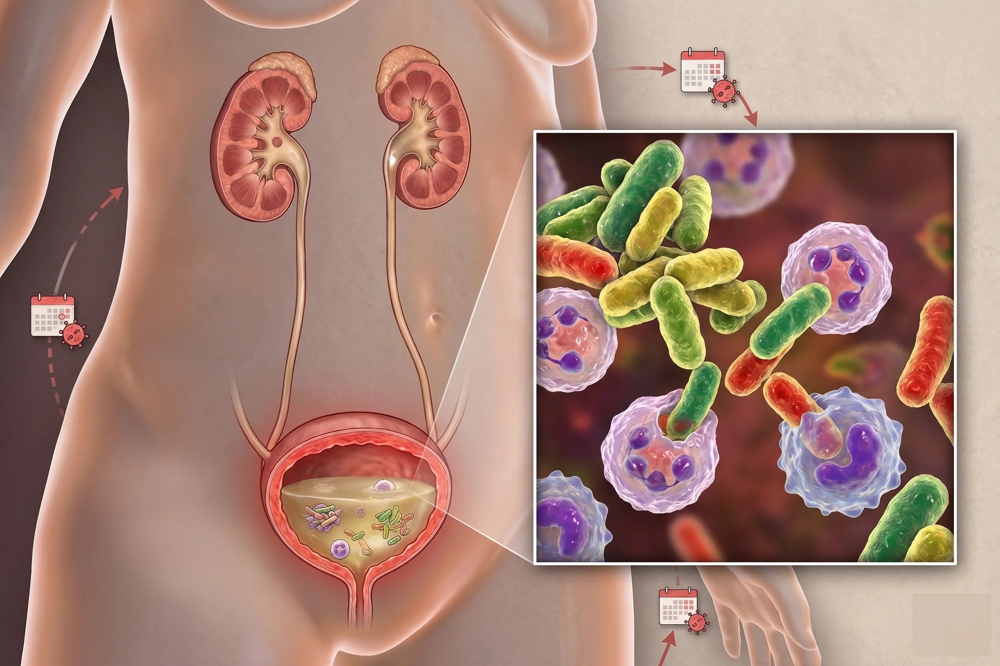

Las infecciones de las vías urinarias (IVU) son una de las afecciones bacterianas más comunes. Aunque el tratamiento inicial suele ser efectivo, muchas personas experimentan nuevos episodios semanas o meses después. Esto se conoce como reinfección de vías urinarias o infección urinaria recurrente.
Estas recaídas no solo causan molestias constantes, sino que afectan la calidad de vida y aumentan la necesidad de antibióticos. A continuación, te explicamos de forma sencilla sus causas, síntomas principales y cómo evitar que vuelvan a aparecer.
¿Qué es una reinfección de las vías urinarias?
Se habla de una reinfección cuando aparece una nueva infección tras haberse recuperado por completo de un episodio anterior. Clínicamente, se considera que existe una infección urinaria recurrente (o cistitis recurrente) bajo estos criterios:
- 2 o más infecciones en un lapso de 6 meses.
- 3 o más infecciones en un período de 12 meses.
En la mayoría de los casos, la causa es el ingreso de nuevas bacterias al tracto urinario, aunque a veces puede deberse a bacterias persistentes que no se eliminaron del todo en el tratamiento anterior.
¿Cómo funcionan las vías urinarias?
El sistema urinario limpia el cuerpo eliminando los desechos a través de la orina. Está formado por los riñones (que filtran la sangre), los uréteres (conductos de transporte), la vejiga (órgano de almacenamiento) y la uretra (conducto de salida).
Aunque la orina es estéril, si bacterias externas (comúnmente Escherichia coli del tracto intestinal) entran por la uretra y se multiplican, dan origen a la infección.

¿Por qué es más común la infección urinaria en mujeres?
La infección urinaria en mujeres es mucho más frecuente debido a dos factores anatómicos clave:
- Una uretra más corta: Las bacterias tienen un camino mucho más rápido para llegar a la vejiga.
- Cercanía anatómica: La uretra está muy cerca de la vagina y el ano, zonas donde habitan bacterias de forma natural.
Se estima que más del 50% de las mujeres sufrirá al menos una infección urinaria en su vida, y muchas de ellas experimentarán recurrencias.
"Modificar ciertos hábitos diarios y optar por una prevención natural son los pilares fundamentales para romper el ciclo de las reinfecciones urinarias."
Principales causas y factores de riesgo
Las reinfecciones suelen producirse por una combinación de los siguientes factores:
- Persistencia bacteriana: Bacterias que forman biopelículas (biofilms) en la vejiga, resistiendo a los antibióticos.
- Actividad sexual: El movimiento facilita mecánicamente la entrada de bacterias a la uretra.
- Menopausia: La falta de estrógenos altera el pH y la flora vaginal protectora.
- Hábitos diarios: Una baja ingesta de agua o aguantarse las ganas de orinar.
- Otras condiciones: Diabetes no controlada, cálculos renales o defensas bajas.
Síntomas de una reinfección urinaria
Los síntomas de infección urinaria recurrente son idénticos a los de una infección común:
- Dolor o ardor fuerte al orinar.
- Necesidad constante e urgente de ir al baño, incluso si se orina muy poco.
- Sensación de que la vejiga no se ha vaciado por completo.
- Orina con aspecto turbio, oscuro o con olor fuerte.
- Presencia de pequeños hilos de sangre en la orina.
Nota de alarma: Si presentas fiebre alta, escalofríos, náuseas o dolor en la espalda baja, acude al médico de inmediato, ya que podría indicar que la infección llegó a los riñones.
Diagnóstico y Tratamiento
Ante una reinfección, es indispensable un diagnóstico médico mediante un examen general de orina y un urocultivo con antibiograma. Este último identifica la bacteria exacta y cuál es el antibiótico más eficaz.
Es vital terminar el tratamiento con antibióticos recetados por el médico exactamente como se indicó, incluso si te sientes mejor antes de tiempo, para evitar generar resistencia bacteriana.
Prevención de infección urinaria: Consejos clave
La prevención de infección urinaria es el método más efectivo a largo plazo. Sigue estas sencillas pautas en tu día a día:
- Toma suficiente agua: Beber entre 1.5 y 2 litros de agua al día ayuda a limpiar la uretra al orinar frecuentemente.
- No retengas la orina: Ve al baño apenas sientas la necesidad.
- Orinar después de tener relaciones sexuales: Expulsa las bacterias que hayan podido ingresar.
- Límpiate correctamente: Hazlo siempre de adelante hacia atrás para no arrastrar bacterias anales a la uretra.
- Evita irritantes: No uses duchas vaginales, jabones perfumados o desodorantes íntimos que alteren tu flora natural.
- Usa ropa interior de algodón: Evita la humedad excesiva en la zona genital.
Arándano rojo para infecciones urinarias
Para complementar las medidas preventivas, el uso de arándano rojo para infecciones urinarias es una de las opciones naturales más estudiadas por la ciencia.
Su efectividad radica en las proantocianidinas PAC (especialmente de tipo A). Estos compuestos bloquean la capacidad de bacterias como la Escherichia coli para adherirse a las paredes de la vejiga. Al no poder fijarse, las bacterias se eliminan fácilmente con la orina, ayudando a mantener una buena salud urinaria y previniendo nuevas infecciones.
CYSPREX®: Tu Aliado en la Prevención
Como apoyo preventivo, CYSPREX® es una opción integral de PROFARNOVA. Su fórmula avanzada combina 36 mg de proantocianidinas (PAC) —la dosis clínicamente recomendada— junto con Vitamina C y Resveratrol para fortalecer el sistema urinario y proteger las células frente al daño oxidativo.
Conclusión
La reinfección urinaria es molesta y común, pero modificando pequeños hábitos diarios y apoyándote en opciones preventivas eficaces como CYSPREX®, puedes proteger tu sistema urinario y disfrutar de una vida plena y sin recaídas.
Referencias
Los artículos de salud de PROFARNOVA se basan en información respaldada por evidencia científica y son revisados por profesionales de la salud para garantizar la precisión, la fiabilidad y los estándares clínicos actualizados.
- Ackerman, A. L., Bradley, M., D’Anci, K. E., Hickling, D., Kim, S. K., & Kirkby, E. (2025). Updates to recurrent uncomplicated urinary tract infections in women: AUA/CUA/SUFU guideline. American Urological Association. https://www.auanet.org/guidelines-and-quality/guidelines/recurrent-uti
- Flores-Mireles, A. L., Walker, J. N., Caparon, M., & Hultgren, S. J. (2015). Urinary tract infections: Epidemiology, mechanisms of infection and treatment options. Nature Reviews Microbiology, 13(5), 269–284.
- Hooton, T. M. (2012). Clinical practice: Uncomplicated urinary tract infection. The New England Journal of Medicine, 366(11), 1028–1037.
- Najar, M. S., Saldanha, C. L., & Banday, K. A. (2009). Approach to urinary tract infections. Indian Journal of Nephrology, 19(4), 129–139.
- Recurrent Urinary Tract Infections. (2025). StatPearls Publishing. National Center for Biotechnology Information. https://www.ncbi.nlm.nih.gov/books/NBK557479/
- Review of non-antibiotic treatment and prevention of recurrent UTIs – A summary of current guidance and suggested treatment algorithm. (2025). PMC. https://pmc.ncbi.nlm.nih.gov/articles/PMC12627364/
- Prevention of recurrent urinary tract infections in women. (2013). Drug and Therapeutics Bulletin, 51(6), 69–72. https://pubmed.ncbi.nlm.nih.gov/23766394/
- Al-Badr, A., & Al-Shaikh, G. (2013). Recurrent urinary tract infections management in women: A review. Sultan Qaboos University Medical Journal, 13(3), 359–367. https://pmc.ncbi.nlm.nih.gov/articles/PMC3749018/